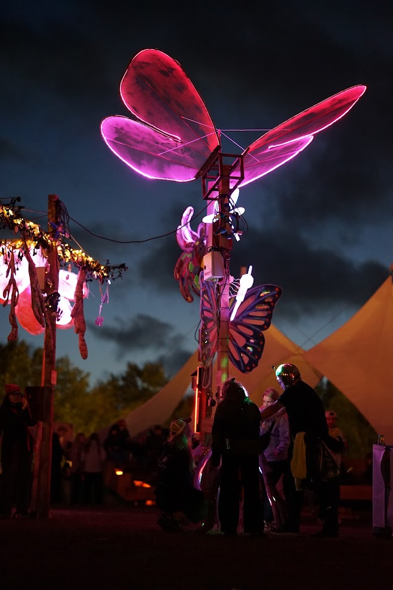
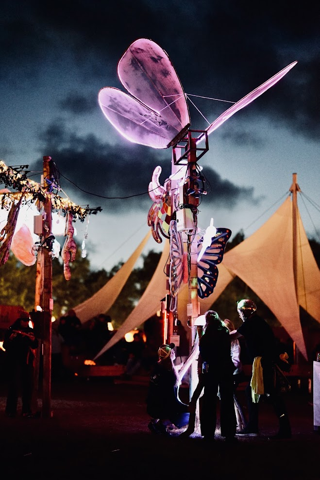

Roskilde Festival 2026 · RF × RUC
What Once Flew.
A giant butterfly, brought to life through movement and light. Made with Frederik Göbel and Rikke van Hauen for Roskilde Festival.

01 / At the festival
A familiar creature.
An unfamiliar presence.
We made a huge butterfly for Roskilde Festival: a constructed creature whose wings catch the light above the people gathered around it. The installation brings together sculpture, prototyping, and the experience of encountering something unexpected.
The idea grew from a question: how can nature be so skilled at creating beautiful things, while humans are so capable of destroying them? Inspired by the butterfly Herorandøje, we imagined a creature reconstructed by human hands.
Our intention was to invite reflection on the resources we use and the relationship between people and nature. The butterfly became a way to make that question physical.
- Made for
- Roskilde Festival 2026 · RF × RUC
- Team
- Kristoffer Hygum Nielsen
Frederik Göbel
Rikke van Hauen - Explorations
- Kinetic sculpture · Light · Material experiments
02 / Light & scale
Wings against the night.
Light traces the wings, revealing their surface and structure against the festival sky. Up close, the supporting frame and mechanism remain visible: this is a creature we have built, with the process of making it part of its character.
The festival photographs show the finished installation. The renders and prototypes below document the ideas and experiments that led up to it.

03 / From idea to installation
Finding a way to fly.
Concept renders and workshop experiments from our RF × RUC application.
The early concept imagined a hybrid creature made from metal and acrylic. We wanted its movement to feel deliberately heavy and unfamiliar, rather than imitate a living butterfly. We explored a reused actuator alongside a mechanical, power-free approach driven by a visitor’s hand.


Alongside the mechanism, we experimented with materials that could carry the wings and interact with light. Reuse and resistance to wind and rain were central questions in the development process.